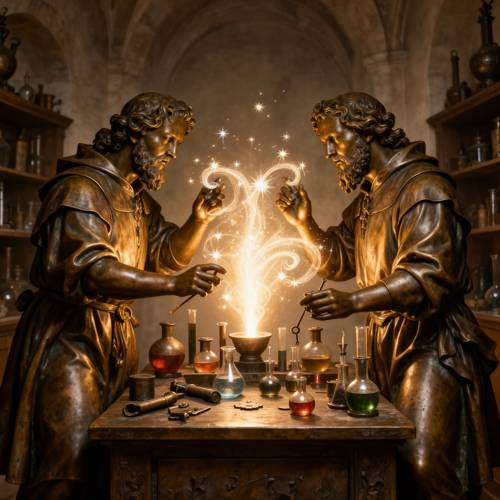
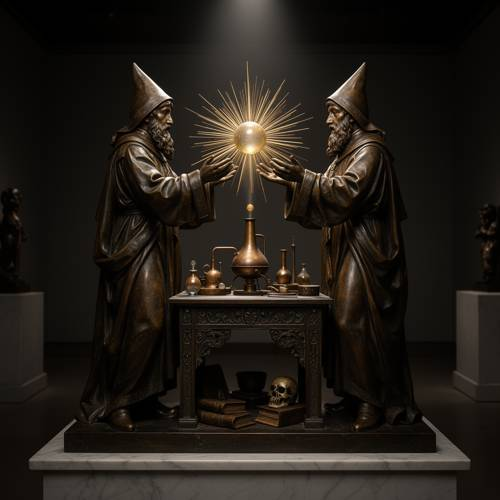
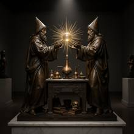

Action — Please generate a picture: a Renaissance bronze sculpture depicting tw
Please generate a picture: a Renaissance bronze sculpture depicting two alchemists performing spells across a laboratory bench, with light gathering between them.

Direct — one call, no iteration

Continuum — Kimi K3 + FLUX.2-dev
Judge — Direct
PASSAction - Non-contact Interaction — The image shows two figures on opposite sides of a laboratory bench. They are gesturing with their hands toward a central area above the bench where bright, swirling light and sparkles are gathered, visually representing the act of performing spells in a non-contact manner.
FAILStyle — The image depicts two figures with a metallic, bronze-like texture, consistent with a bronze sculpture. However, the image also includes elements that are not part of a sculpture, such as glowing light effects, sparkles, and transparent glassware containing colored liquids. These elements are rendered photorealistically, making the overall style a composite rather than a pure depiction of a Renaissance bronze sculpture.
PASSWorld Knowledge — The figures are depicted as alchemists. They are shown in a laboratory setting, surrounded by various glassware like flasks and beakers on a bench and on shelves in the background. They are dressed in robes, which is a common visual trope for alchemists.
PASSAttribute - Quantity — The image accurately depicts exactly two figures, who are identifiable as the alchemists mentioned in the prompt.
Judge — Continuum
PASSAction - Non-contact Interaction — The image depicts two figures standing on opposite sides of a small, ornate table. Their hands are held open and outstretched towards a glowing orb of light that floats between them, creating a clear visual of a non-contact interaction, consistent with 'performing spells'.
PASSStyle — The image shows a sculpture with the distinct color, texture, and sheen of bronze. The style of the figures, with their detailed robes, realistic anatomy, and the ornate carving of the table, is consistent with the aesthetics of Renaissance sculpture.
PASSWorld Knowledge — The two figures are depicted as alchemists. This is evident from their attire of long robes and pointed hats, and the presence of laboratory equipment on the table, including various flasks, beakers, and what appears to be a distillation apparatus (alembic). Underneath the table, books and a skull are visible, further reinforcing the alchemical theme.
PASSAttribute - Quantity — The sculpture centrally features exactly two figures, both of whom are identifiable as alchemists.
What the agent did
Thinking
Generate an image: Renaissance bronze sculpture, two alchemists, laboratory bench, spells, light gathering between them. Use flux2-dev.
Step 1 — `generate_image`
{
"model": "flux2-dev",
"prompt": "A Renaissance bronze sculpture of two robed alchemists facing each other across a carved laboratory bench, performing a spell together \u2014 their outstretched hands meet above the bench with a glowing orb of light gathering between their palms, rays of illumination radiating upward. Dark patinated bronze with warm golden highlights on raised surfaces, fine Renaissance detail in the draped robes, bearded faces, and pointed hoods. The bench holds small bronze alembics, flasks, books, and a skull. The sculpture is displayed on a marble pedestal in a dim museum gallery, dramatic spotlight from above, deep shadows, photorealistic render of the bronze artwork."
}
Result img_0

Thinking
The first generation is quite good: two robed alchemists in pointed hats facing each other across a bench, bronze sculpture, glowing orb of light with rays between them, flasks, skull, books, museum display. Everything the prompt asks for is present. Mark best and stop — good enough is a stop condition.
Model
The first generation looks strong: two hooded bronze alchemists facing each other across a carved bench, a radiant orb of light gathered between their outstretched hands, with flasks, books, and a skull rendered in warm Renaissance bronze on a museum pedestal. All requested elements are present and correct.
Step 2 — `mark_best`
{
"image": "img_0",
"reason": "All prompt elements present: Renaissance bronze sculpture, two alchemists casting across a laboratory bench, light gathering between them, dramatic museum display with strong bronze detail."
}
Model
The image is complete and matches your request: - **Renaissance bronze sculpture** — dark patinated bronze with golden highlights, ornate draped robes, detailed carved bench, displayed on a marble pedestal in a gallery setting - **Two alchemists** — mirror-image hooded figures with beards and pointed hats, hands raised in spell-casting gestures - **Laboratory bench** — laden with bronze alembics, flasks, books, and a skull beneath - **Light gathering between them** — a glowing orb with radiating golden rays suspended above the bench between their palms The dramatic overhead spotlight and deep shadows give it the feel of a museum-piece photograph. Since everything the prompt asks for is present and rendered well, I've marked this as the final result rather than risk over-editing a good image.